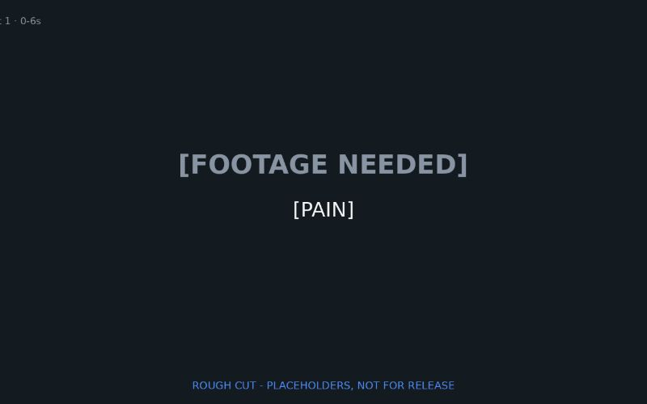
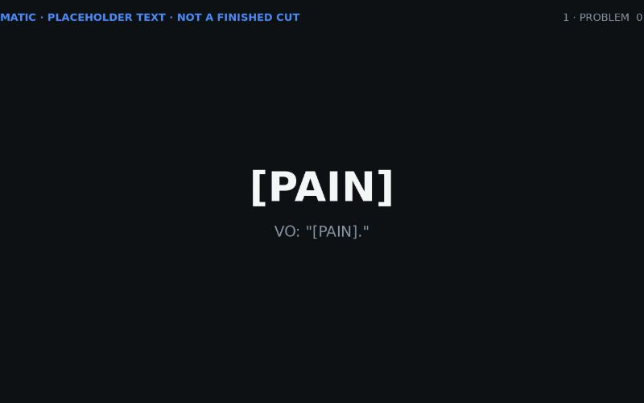
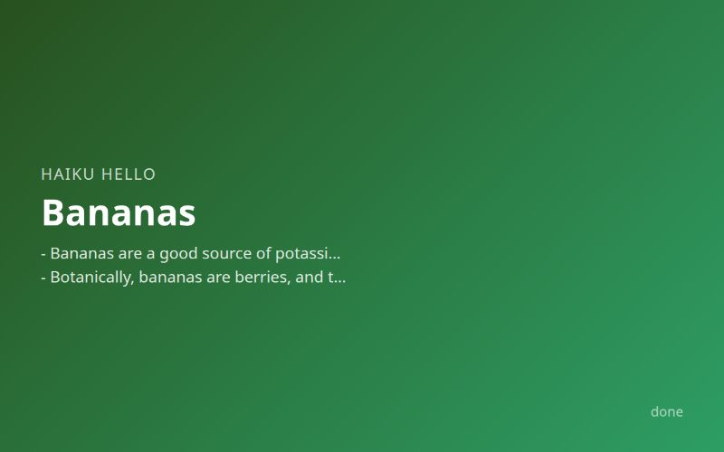

Launch video
A 60-second launch video script template with fill-in slots and a rendered draft video, since no product was given.
6 done, 0 failed, 3 cancelled, 0 running · times in America/Chicago

A 60-second launch video script template with fill-in slots and a rendered draft video, since no product was given.

A 30-second launch video script template with bracketed product slots and a placeholder video, since no product brief existed.

A three-bullet note on bananas covering nutrients, botanical classification and ripening.
Topic: bananas
A three-bullet note on how a stage should check its lessons table before starting work.
Topic: how a stage should use its lessons learned table before starting work
A three-bullet note on why small focused pipeline agents beat one giant prompt.
Topic: why small focused agents in a pipeline beat one giant prompt